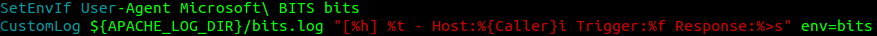

We can monitor BITS requests in our Apache access.log as follows, or we can do better...
To generate a log that leverages our custom file names and request headers, we add some Apache CustomLog and SetEnvIf directives to /etc/apache2/sites-enabled/000-default

After restarting Apache, we now have a BITS only log with the exact information we need:

Unfortunately, we aren't quite done yet. If our BITS job sends a HEAD requests for a file that does not exist we completely lose access.
From MSDN:- ERROR — A nonrecoverable error occurred; the transfer will not be retried.